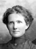
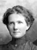
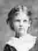

Frederick Rich and Ann Elizabeth Lovell Lyman Family Group
Home
Histories
Charts
Photos
Maps
Restricted
News
Info
Contact
 symbol is a link to a history, and the chart
symbol is a link to a history, and the chart  symbol is a link to a family group chart.)
symbol is a link to a family group chart.)| Amasa Mason Lyman and Caroline Ely Partridge | ----> |    |
Frederick Rich Lyman Born 12 OCT 1856 Salt Lake City,Salt Lake,Utah,USA Died 4 FEB 1911 Oak City,Millard,Utah,USA Ann Elizabeth Lovell Born 11 DEC 1859 Fillmore,Millard,Utah,USA Died 16 DEC 1916 Oak City,Millard,Utah,USA Married 6 Dec. 1875 | |
|
John Lovell and Ane Pedersen |
 |
Edith Elzina Lyman Born 4 AUG 1879 Oak City,Millard,Utah,USA Died 18 AUG 1932 Salt Lake City,Salt Lake,Utah,USA Married Joseph Trimble Finlinson 8 Oct 1903 The 1st child of Frederick Rich Lyman and Ann Elizabeth Lovell |